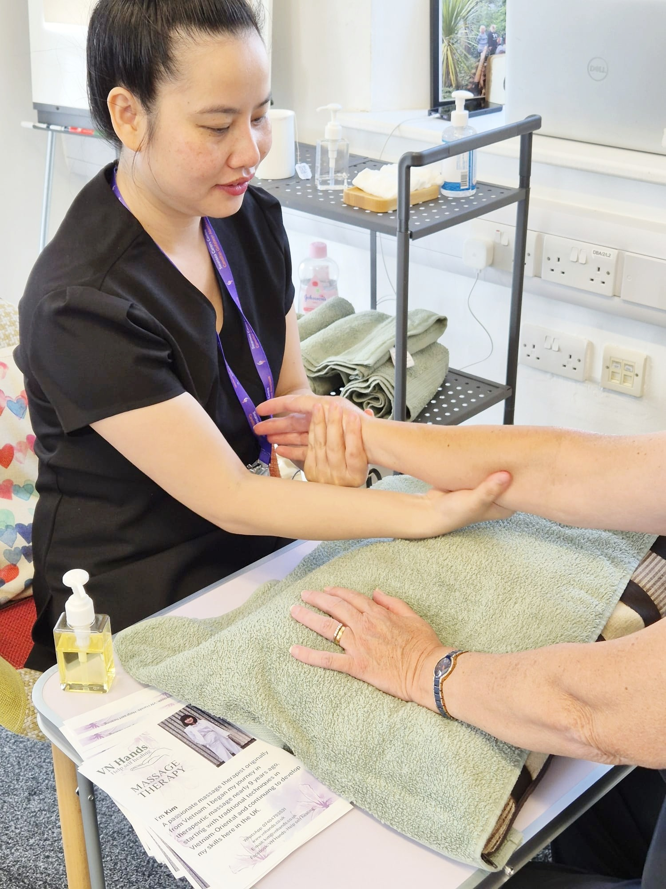
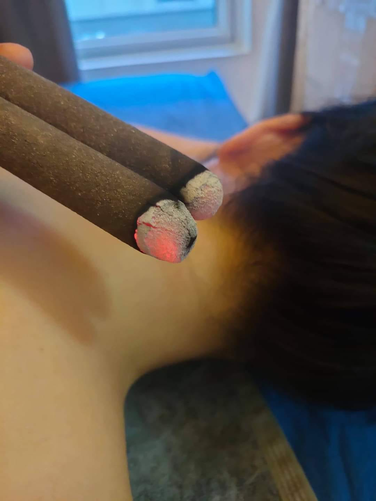

Authentic Vietnamese Massage & Holistic Therapies in Swansea
VN Hands offers professional therapeutic massage in Swansea, including deep tissue, relaxation,
acupressure and reflexology. Kim also provides specialist oncology massage and supportive touch
therapies for people living with or beyond cancer, following specialist oncology training and
SATCC (The Standards Authority for Touch in Cancer Care) standards.
Please note: VN Hands offers professional therapeutic massage in a respectful
and
safe environment. All clients are asked to observe appropriate personal boundaries to help
maintain
a welcoming space for everyone.
Booking
How It Works
- Select your preferred session duration using the booking calendar below.
- Choose an available date and time that suits you.
- Provide your contact details to confirm your appointment.
- We'll send you a confirmation by text or email.
- Arrive 5–10 minutes early to relax before your session.
- Note for new clients: An additional 15-minute free consultation will be included before your first session. This helps us understand your needs and provide the best possible care.
What You Need to Know
- Payment: Cash or bank transfer accepted.
- Cancellation: Please notify at least 24 hours in advance.
- Note: All sessions are strictly professional and therapeutic. Thank you for helping us create a safe and respectful experience.
Ready to Book?
Click the button below to fill out our secure form. We'll contact you shortly to confirm your session.
Book NowStill Have Questions?
Feel free to call or text us at 07404793531 or email kim@vnhands.co.uk.
For quickest responses, please message us
on WhatsApp
.
We reply promptly and can send you booking details there.
About Me

I'm Thi Kim Ngan Tran, a qualified massage therapist with over 10 years experience in therapeutic massage, including deep tissue, relaxation, reflexology and traditional Eastern techniques.
I am a qualified Oncology Massage Therapist, having completed specialist training in massage and touch therapy for people affected by cancer. I am also a member of the Standards Authority for Touch in Cancer Care (SATCC).
My specialist training has given me additional knowledge of the considerations involved when working with people during and after cancer treatment, including adapting pressure, positioning and treatment areas to the individual's circumstances.
Now practising at the Clinic of Chinese Medicine in Swansea, I combine my experience in Western massage and Eastern wellness traditions with a caring, individual approach.
My aim is to provide a professional, respectful and comfortable environment where every client can feel listened to and supported.
If you’re looking for compassionate, professional care in a supportive environment, I would love to welcome you to VN Hands.
At VN Hands, we believe in the body’s natural ability to heal.
Our approach combines traditional Vietnamese massage with
holistic therapies to support both physical and emotional well-being.
Each treatment is designed to restore balance, reduce stress, and
encourage your body's own healing response.
At VN Hands, we follow traditional healing methods passed down by our ancestors to
support
the
body's
natural recovery from within. "Help Self-Healing"
is not just about physical wellness—it's about restoring your inner strength and
embracing a
more
vibrant, healthy life.

Oncology Massage & Cancer Support
Specialist massage for people living with or beyond cancer
At VN Hands, we understand that cancer and its treatment can affect the body in many different
ways. Massage may need to be adapted according to your individual circumstances, treatment
history, comfort and energy levels.
Kim has completed specialist Oncology Massage training and is a member of the Standards
Authority for Touch in Cancer Care (SATCC). This additional training supports a safe, sensitive
and individual approach to touch therapy for people living with cancer, undergoing treatment or
recovering after treatment.
Our oncology massage sessions are designed to provide a calm, supportive experience, with
treatment adapted to your individual needs. This may include gentle massage, positioning and
pressure adjustments, and avoiding areas that are sensitive or affected by treatment.
Breast Cancer Massage Support
We offer supportive massage for people who have experienced breast cancer and its treatment.
Treatment can be adapted around areas affected by surgery, radiotherapy, scarring or other treatment-related changes. We take time to understand your individual circumstances and what feels comfortable for you.
Scar Tissue Support
Surgery and other cancer treatments can sometimes leave areas of scar tissue, tightness or changes in how the body feels and moves.
Where appropriate and within our professional scope, Kim can provide gentle supportive work around healed scar areas, with the treatment adapted to your comfort and circumstances.
Your comfort comes first
There is no standard massage for someone affected by cancer. Every session begins with a detailed consultation so that we can understand your needs and adapt the treatment accordingly.
You remain in control throughout your treatment. Pressure, positioning, areas treated and treatment duration can all be adjusted to help you feel comfortable and respected.
If you are unsure whether massage is suitable for you, please contact us before booking so we can discuss your circumstances.
Services
A safe, professional and supportive massage experience for women.
Treatments Available
Therapeutic Massage: Focused massage techniques to help reduce muscular tension, improve mobility and support physical wellbeing.
Relaxation Massage: A calming treatment to help reduce stress, encourage relaxation and promote better sleep.
Oncology Massage: Specially adapted massage designed to support comfort, relaxation and emotional wellbeing for people during or after cancer treatment.
Scar Tissue Support Massage: Gentle, adapted techniques designed to support comfort, mobility and body awareness around healed scar tissue.
Breast Cancer & Surgery Support Massage: Individualised massage support for women following breast cancer treatment or breast surgery, adapted to their comfort, treatment history and individual needs.
Prices
75 mins – £65
60 mins – £55
30 mins – £35
Reviews
Please leave us a review by clicking here